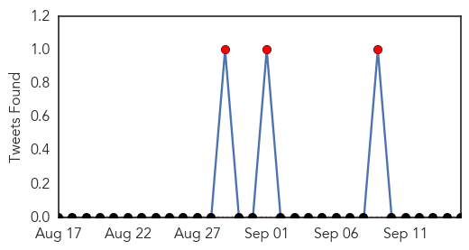
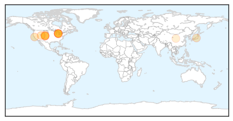

Swine Flu
30-Day Web Trend
1 alerts, 5 warnings

30-Day Twitter Trend
3 alerts, 0 warnings

Article Locations

Article Confidences

Top Articles:
Top Tweets:
-
No tweets found for Sep 15, 2015
Bubonic Plague
30-Day Web Trend
30-Day Twitter Trend
0 alerts, 0 warnings

Article Locations
Article Confidences
Top Articles:
- 0.884
- Bubonic Plaque organisms are extremely dangerous
- 0.859
- Bubonic plague strikes Michigan resident
- 0.851
- Bubonic Plague Surfaces In Michigan for First Time As Average Annual Cases Double
- 0.818
- Bubonic plague: Michigan resident contracts life-threatening disease, 14th case recorded in US
- 0.772
- Marquette County resident contracts plague in Colorado - IronMountainDailyNews.com
- 0.769
- Mich. resident got plague in Colo.
- 0.767
- Michigan Man Has Bubonic Plague, But Don’t Worry — This Isn’t Black Death Redux
- 0.764
- Wisconsin Gazette - Smart, independent and revealing. News, opinion and entertainment coverage
- 0.712
- Michigan resident tests positive for plague
- 0.618
- Bubonic plague confirmed in Michigan resident
- 0.564
- Bubonic Plague Reported in Michigan
- 0.553
- Michigan plague case diagnosed: 14 bubonic plague victims in 2015 outbreak
- 0.541
- Michigan reports first case of plague in its history
- 0.526
- Michigan reports first positive case of plague
- 0.508
- MI Health Authorities Document First Case of Bubonic Plague
Top Tweets:
-
No tweets found for Sep 15, 2015